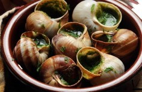

Les Cagarolettes
Les cagarolettes sont un type d’aliment spécifique à la France de la ville de Mompellier.
Ingrédients :
- 200 grammes de chair à saucisse très maigre.
- 3 tomates pelées, épépinées et concassées.
- 3 gousses d’ail hachées avec du persil.
- 3 verres de vin blanc sec.
- 1 bouquet garni.
Instructions :
- Prenez environ une trentaine de cagaroulettes par personne.
- Faites-les dégorger 10 à 12 heures avec deux poignées de sel et un demi-litre de vinaigre.
- Mettez-les à cuire à l’eau et au sel avec un gros bouquet garni sans oublier plusieurs branches de fenouil, Il faut deux à trois heures de cuisson au moins.
- Égouttez-les et incisez la coquille à la partie opposée à l’orifice de façon à obtenir deux ouvertures.
- Ajoutez les escargots et mouillez avec de l’eau de façon à juste couvrir les escargots.
- Assaisonnez.
- Laissez mijoter à petit feu environ une heure et, avant la fin de la cuisson.
- Liez avec cinquante grammes de chapelure.